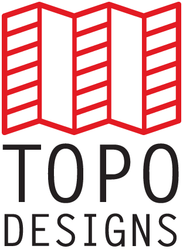
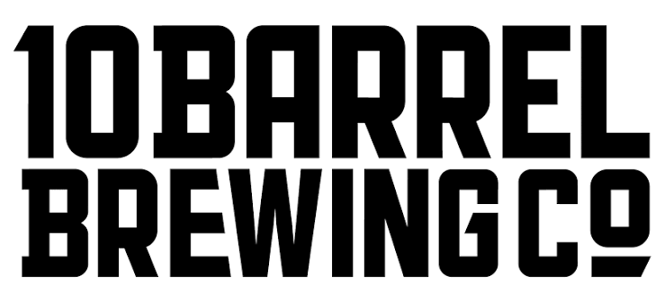
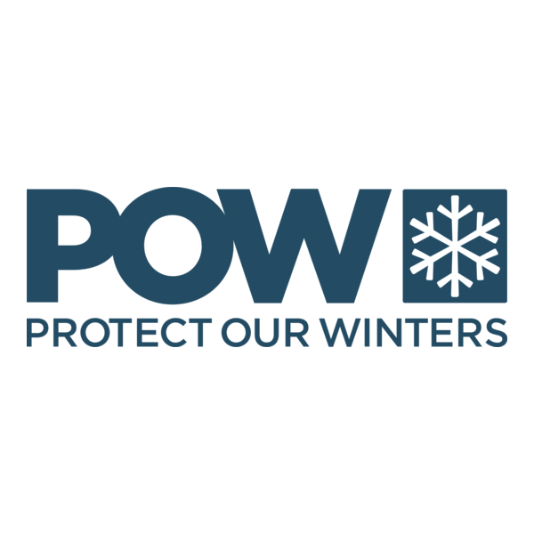
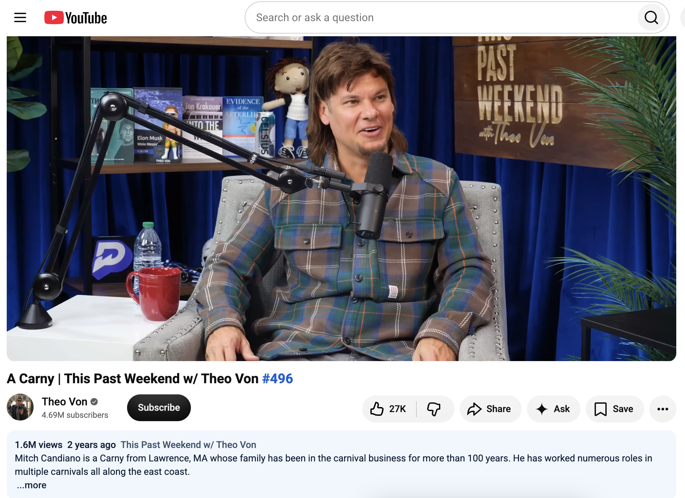
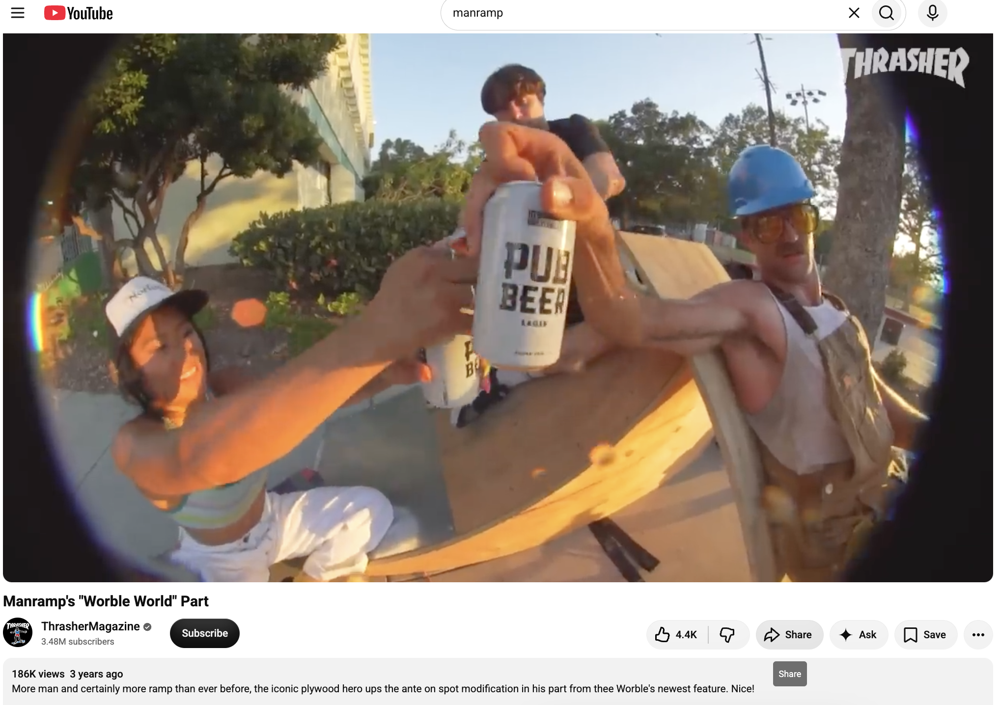
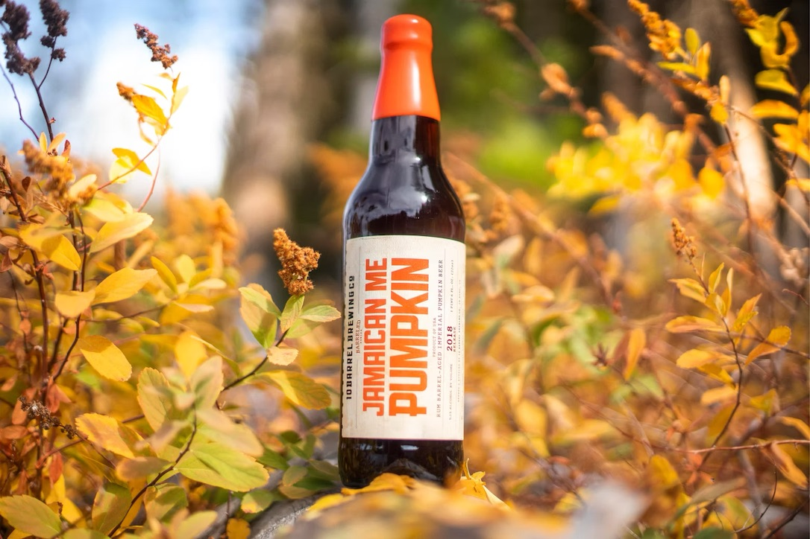
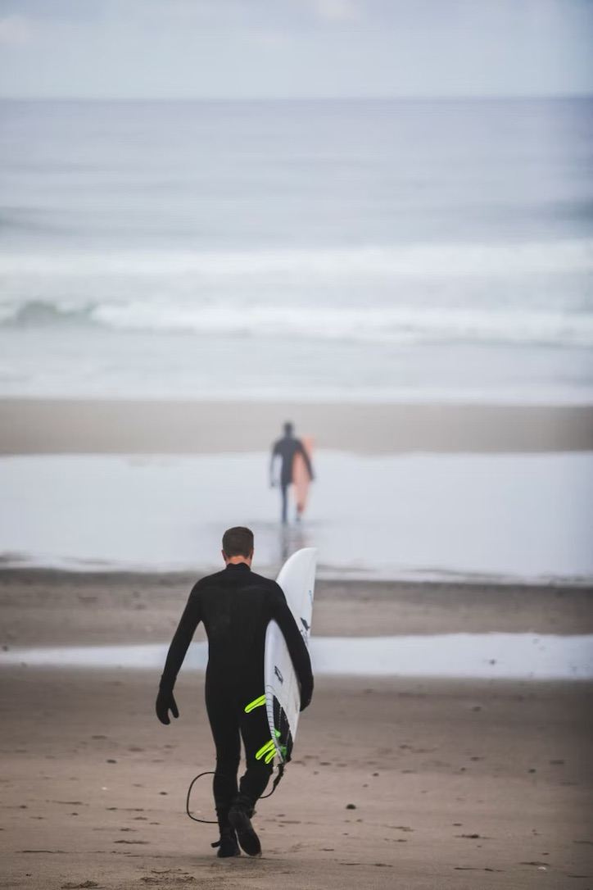

Add image/video: Protect Our Winters — campaign or athlete content
ART DIRECTOR / CREATIVE LEADER
I build brands, campaigns and stories for the outdoors.
Creative leader with 10+ years across outdoor, lifestyle and purpose-driven brands — spanning art direction, creative strategy, photography, film, social and campaign development.
View selected work ↓SELECTED IMPACT
Results behind the work.
+277%POW Instagram follower growth YoY
+205%POW Instagram reach YoY
+221%Topo Instagram follower growth, Q2'23 vs Q2'22
+197%Topo Instagram impressions, Q2'23 vs Q2'22
BRANDS I'VE WORKED WITH



[LOGO]
[LOGO]
[LOGO]
SELECTED WORK
Creative direction · Art direction · Content · Social




REEL & VIDEO
[EDIT: short line describing your reel]
[EDIT: embed your demo reel here — e.g. <iframe src="https://player.vimeo.com/video/262744446"></iframe>]
[EDIT: embed additional video here]
THE SHORT VERSION
I sit at the intersection of strategy, creative and making.
My work spans brand systems, campaigns, social, photography and film. I like big ideas, strong visual worlds and work that feels connected to the people and places it represents.
FIELD WORK